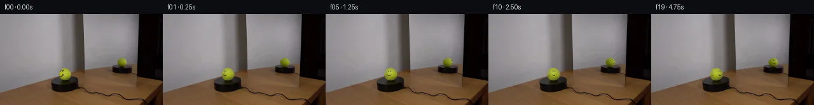

![首帧]()

Round 00
2026-11-05T07:18:59.347889+00:00像素候选变化代码 +218/−0inspection 更新
pixels 1107e1e526a7af26 · code 5af0669ff64e3c50
查看本轮 generate.py 真实 diff
--- previous/generate.py +++ current/generate.py @@ -0,0 +1,218 @@ +#!/usr/bin/env python3 +"""Generate the 20-frame PixelWorld continuation from the supplied first frame. + +The photograph is kept locked. Only two measured spherical footprints are +updated: the directly seen tennis ball and its smaller mirror image. +""" + +from pathlib import Path +import math + +import numpy as np +from PIL import Image, ImageDraw +from scipy.ndimage import gaussian_filter + +from artifact_io import save + + +ROOT = Path(__file__).resolve().parent +W, H = 256, 144 +N = 20 + + +def angular_difference(a: np.ndarray, b: float) -> np.ndarray: + """Signed wrapped angle a-b in [-pi, pi].""" + return np.arctan2(np.sin(a - b), np.cos(a - b)) + + +def clean_camera_shading( + source: np.ndarray, + cx: float, + cy: float, + rx: float, + ry: float, + exclude_mark: bool, +) -> np.ndarray: + """Estimate smooth photographic RGB shading without the printed marking. + + A normalized convolution is constrained to the measured sphere interior. + For the direct sphere, the small left-side face region is excluded from + the convolution support so it cannot remain as a stationary ghost. + """ + yy, xx = np.mgrid[0:H, 0:W] + nx = (xx - cx) / rx + ny = (yy - cy) / ry + support = nx * nx + ny * ny <= 0.94 * 0.94 + if exclude_mark: + mark_zone = (nx < -0.06) & (nx > -0.86) & (ny > -0.77) & (ny < 0.46) + support &= ~mark_zone + + sigma = 1.45 if rx > 9 else 1.05 + weights = support.astype(np.float64) + denominator = gaussian_filter(weights, sigma=sigma, mode="nearest") + result = np.empty_like(source, dtype=np.float64) + for channel in range(3): + numerator = gaussian_filter(source[..., channel] * weights, sigma=sigma, mode="nearest") + result[..., channel] = numerator / np.maximum(denominator, 1e-5) + return result + + +def render_ball( + frame: np.ndarray, + clean_shading: np.ndarray, + cx: float, + cy: float, + rx: float, + ry: float, + theta: float, + reflected: bool, +) -> None: + """Render one rotating, softly antialiased tennis sphere into frame.""" + margin = 2 + x0 = max(0, int(math.floor(cx - rx - margin))) + x1 = min(W, int(math.ceil(cx + rx + margin + 1))) + y0 = max(0, int(math.floor(cy - ry - margin))) + y1 = min(H, int(math.ceil(cy + ry + margin + 1))) + yy, xx = np.mgrid[y0:y1, x0:x1] + sx = (xx - cx) / rx + sy = (yy - cy) / ry + radius2 = sx * sx + sy * sy + inside = radius2 <= 1.08 + surface_z = np.sqrt(np.maximum(0.0, 1.0 - radius2)) + screen_longitude = np.arctan2(sx, np.maximum(surface_z, 1e-6)) + + # The real view moves left-to-right. In the mirror, horizontal longitude + # is reversed and the initial view is 49 degrees around the ball, where + # the measured smiley is just beyond the visible rim. + if reflected: … diff truncated; 131 more lines …